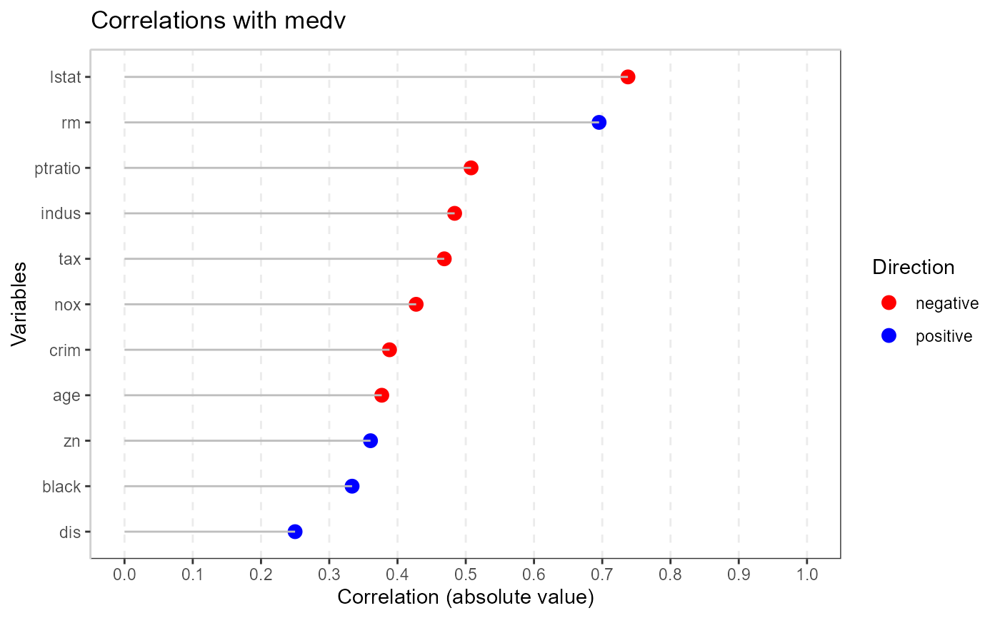

Creates a correlation table using numeric variables.
Usage
# S3 method for class 'ryx'
plot(x, ...)Value
method used, dataset used, variables used for outliers detected, indices of any detected outliers, scores for the outliers, and values for optional parameters
Examples
library(MASS)
x <- ryx(Boston, "medv")
plot(x)
#>
#> Attaching package: 'dplyr'
#> The following object is masked from 'package:MASS':
#>
#> select
#> The following objects are masked from 'package:stats':
#>
#> filter, lag
#> The following objects are masked from 'package:base':
#>
#> intersect, setdiff, setequal, union
